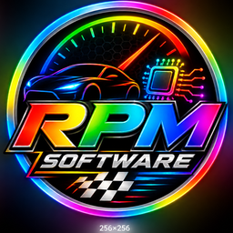

LovaRPMAutonomous coding agent
LICENSE
CheckingExtension activation
Checking license status…
BACKEND
Not connectedConnect your workspace
REPOSITORY
Lovable project
A backend GitHub Personal Access Token with repository access is required for private repositories and pull requests.
Supabase connection is checked from the current Lovable workspace.
CODING TASK
What should the agent change?
Connect to the backend to check model availability.
CURRENT TASK
No active task
Tasks continue on the backend after this panel closes.
HISTORY
Recent tasks
Connect to the backend to load task history.